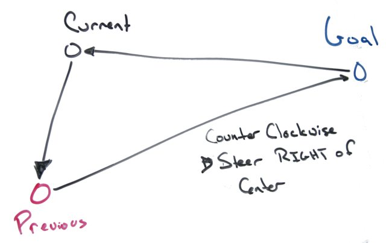
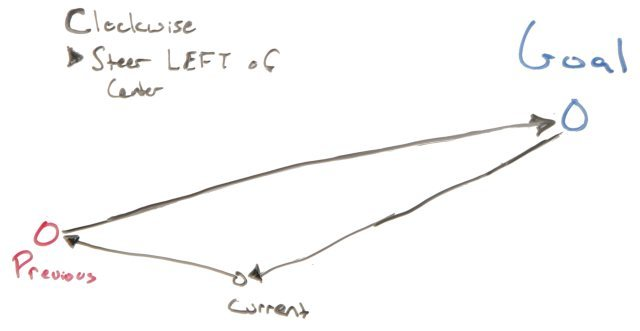

Now that the bot knows where to go, the trick is to get it reasonably to said point.
Again I'm deviating from DIY Drones . Airplane navigation employs lots of models of forces, momentum and the teachings of Stark Draper.
A car has forces that are hard to model, and almost no momentum. I didn't want to come up with a detailed, physically accurate model of the bot. I would have to model:
That's just way too much modeling, noisy variation, and frequent re-calibration.
My first intuition is that we don't need to worry about throttle control here. Either the bot is moving or it's not.
I'm just going to cheat so long as I can use GPS. I'll put off dead reckoning (as it's called in boats) or odometry (as it's called on land). It's not as if I'm flying to the moon.
My gut is that the steering involves the current position, the previous position, and the proximal goal. That the distinction of clockwise versus counter-clockwise tells us which way to turn.
For example we would want to turn right when the winding is counter-clockwise:

And we want to turn right when the winding is clock-wise:

The other intuition is that the larger the change in area, the more the steering angle needs to be corrected.
This leads to the signed area of the triangle. Like the winding number, the sign distinguishes between clockwise and counter clockwise - without the need to come up with a point within the triangle to wind around. A negative sign is clockwise, a positive is counter-clockwise. The magnitude is the area.
The signed area is computed as half the determinant:
$$1/2 det(\table A_x, B-x, C_x; A_y, B_y, C_y; 1,1,1)$$
or $$1/2 ((A_x-C_x)(B_y-A_y)-(A_x-B_x)(C_y-A_y))$$
There is one potential problem: what if the triangle has no area - is the bot driving straight toward the goal or away from it? The solution is to employ a change in distance if the area is too small.
The next step is to feed this change in area into a PID loop as the error factor. The PID loop's responsibility is to adjust the steering angle, with the goal to minimize the area.
The code (lifted from wikipedia) is:
error = setpoint - process_feedback
integral = integral + (error*dt)
derivative = (error - previous_error)/dt
steering angle = (Kp*error) + (Ki*integral) + (Kd*derivative)
previous_error = error(Actually, that is not entirely true. The integral term is not updated for several seconds after starting out from a waypoint.)
The setpoint, integral and previous_error terms are reset when it starts from a waypoint, onto the net.
The drawback to this approach is that there are still three magic coefficients: Kp, Ki, Kd. These have to manually sussed out for any given bot, or changes to it. Not perfect, but I am some ideas on making them automatically set in the future.
The first pass of the algorithm is somewhat naive and possibly very silly. I want to try for something elegant in the future to emphasize relative vehicle orientation. I think the compass may help... I'll have to experiment iwth that.
Next time: the GPS unit!